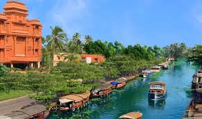

About Alleppey
Alleppey, also known as Alappuzha, is a beautiful coastal town in the southern state of Kerala, India. Famous for its picturesque backwaters, houseboat cruises, and lush green landscapes, Alleppey is often referred to as the "Venice of the East." Visitors can enjoy tranquil boat rides through its extensive network of waterways, explore vibrant local markets, and experience the unique charm of Kerala's rich culture.
Whether you're seeking relaxation on the serene backwaters, indulging in fresh seafood, or witnessing the renowned Nehru Trophy Boat Race, Alleppey promises an unforgettable experience.
1. Lake Palace Resort
Located right by the backwaters, Lake Palace Resort offers luxury accommodations with stunning views of the water. Enjoy amenities like a spa, traditional Kerala cuisine, and houseboat tours.
Address: Thirumala Ward, Chungam, Alappuzha, Kerala
2. Ramada by Wyndham Alleppey
This upscale hotel features modern rooms, a rooftop restaurant, and easy access to houseboat cruises. It’s perfect for those who wish to explore Alleppey's scenic beauty in style.
Address: Nehru Trophy Finishing Point, Punnamada, Alappuzha, Kerala
3. Haveli Backwater Resorts
Combining traditional architecture with modern comfort, Haveli Backwater Resorts offers a unique stay experience. Guests can enjoy cultural performances, boat rides, and local delicacies.
Address: Punnapra, Alappuzha, Kerala